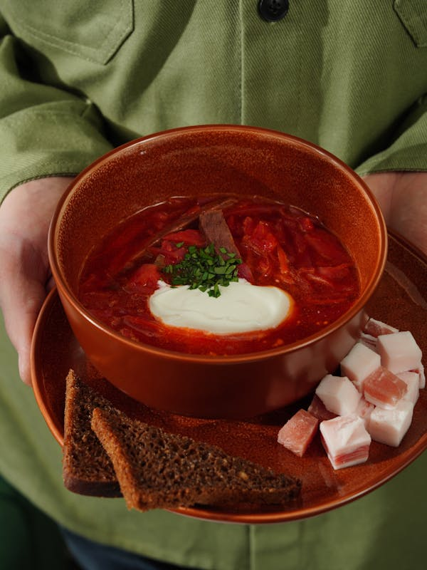
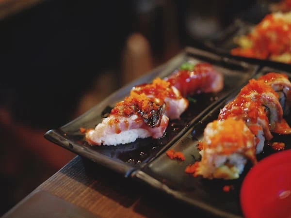
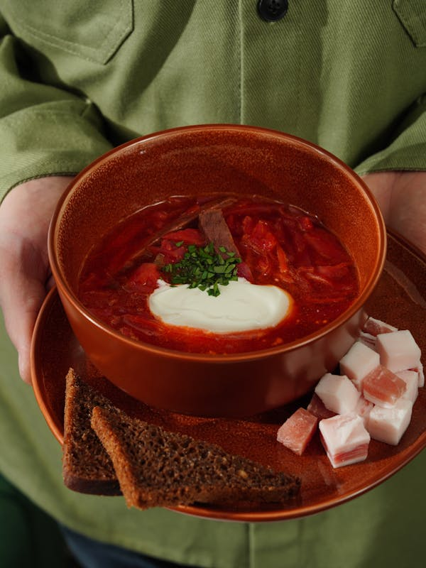
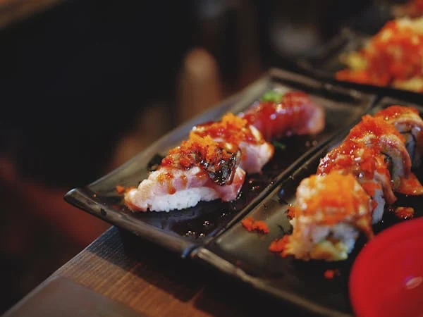
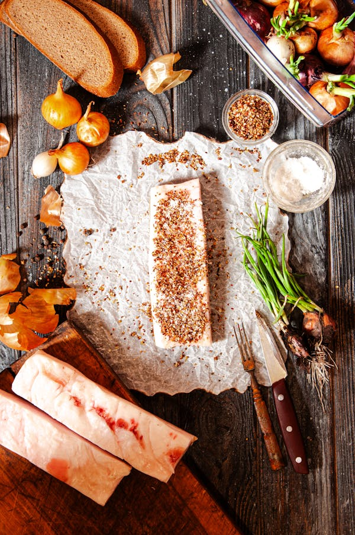
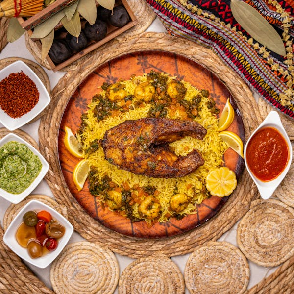
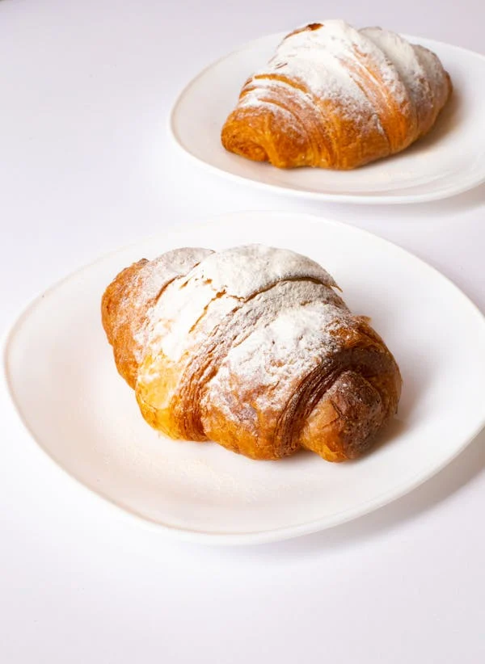

| Українська кухня | Італійська кухня | Японська кухня |
|---|---|---|
|  |  |
 |
| Шинок, Київ | Napule, Київ | SushiYa, Україна |
| Традиційна українська кухня в автентичному стилі. | Справжня італійська піца та паста від шефа з Неаполя. | Суші та роли з доставкою по всій країні. |
Оберіть заклад, який вам до смаку. Нижче наведено популярні приклади для різних кухонь світу.
| Українська кухня | Італійська кухня | Японська кухня |
|---|---|---|
|  | |
 |
| Шинок, Київ | Napule, Київ | SushiYa, Україна |
| Традиційна українська кухня в автентичному стилі. | Справжня італійська піца та паста від шефа з Неаполя. | Суші та роли з доставкою по всій країні. |
| Східна кухня | Мексиканська кухня | Французька кухня |
|---|---|---|
|  |  |  |
| BAZAR, Київ | Taqueria Mexico, Харків | Comme Il Faut, Київ |
| Східна гострота та колорит в сучасному інтер'єрі. | Автентичні тако та буріто з мексиканськими соусами. | Французька класика: круасани, сири, витончені десерти. |
| Тип закладу | Середній чек | Формат обслуговування | Наявність доставки | |
|---|---|---|---|---|
| Без напоїв | З напоями | |||
| Фаст-фуд | 150 грн | 200 грн | Самообслуговування | ✅ |
| Кафе | 250 грн | 320 грн | Офіціанти | ✅ |
| Ресторан | 500 грн | 650 грн | Офіціанти + сомельє | ❌ |
| Їдальня | 100 грн | 140 грн | Лінія роздачі | ❌ |